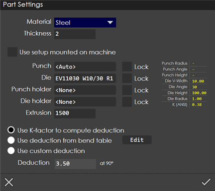
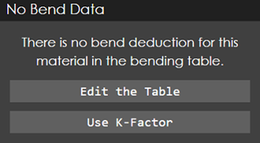

Part Settings
Use the Part Settings dialog (see picture below) to configure the settings concerning the profile.

Material:
The material of the profile being created or edited. You can change the material by selecting another from the drop-down list.
Thickness:
The thickness of the profile.
Use setup mounted on machine:
Turn this option on to use the exact setup from the last program that was run. As you select this, you will see the corresponding punch, die, punch holder, die holder from that last program gets loaded and everything will get locked. Though it is not visible in this page, it uses not just these tools, but also the exact station configuration from the previous program (so you don’t need any changes on the machine). It is quite possible that in this situation the new part cannot be tooled up correctly, and there may be tooling errors. If so, you can open the part and just click on the Recompute button in the sequence page to compute fresh tooling with a more relaxed set of constraints. In other words, when you open a part and click Recompute, the Use setup mounted on machine constraint is relaxed automatically.
Punch, Die, Punch holder, Die holder:
Set the punch, die, punch holder and die holder using these settings. The punch can optionally be set to <Auto> to indicate that there is no preferred punch. If you do select a punch, the Lock option on the right can be used to indicate that you want only this punch to be used (even if it might collide or might otherwise be inappropriate). If not, the punch you select is a recommendation that can override.
For the punch holder and the die holder, it is possible to select as an additional option. In this case, you are requesting that find a solution that uses no punch or die holders if possible. If you also Lock this selection, then must use that recommended punch or die holder to find a solution (and may therefore report that no solutions were found).
Use K-factor to compute deduction:
This uses the material K factor associated with the material to compute the bend deduction. This is displayed in the Deduction input box at the bottom, but it is not editable (since it is computed by based on the K factor). The K factor can be changed by editing the material.
Use deduction from bend table:
This setting uses the bend deduction table that is defined for each material using the Edit Materials page (see the section on bend deductions for more information). Based on the punch and die you have selected, looks up the corresponding deduction in the bend deduction table and displays it. Again, the deduction is not editable. If there is no bend data found in the table for the material, then the message shown below appears, prompting user to edit the table (or to cancel and use the K-factor).

Use custom deduction:
This option can be used if you just want to type in a bend deduction. This is a quick-and-dirty way to get a part’s unfolded length correct and is designed for cases where you want to twiddle the deduction without making permanent changes to the bend deduction table.
The display on the right shows various details of the currently selected punch and die. The K(ANSI) display needs some explanation. If you are using the K-factor method, this is the K-factor that looks up from the material table. If you are using one of the other two methods, then the deduction value is used to reverse-compute the effective K factor and that is displayed here. This is useful to verify that the bend deduction values you are using are reasonable.
Interaction between the various settings
If you don’t select a punch (if you leave that at <Auto>), then the bend deduction table cannot be used since we don’t have a punch radius. In this case, the deduction will switch to Use K-factor to compute deduction.
Upon selecting a valid punch and die, the deduction table will be examined to see if there is a matching entry (for the given thickness, punch radius and die V-width). If a deduction entry is found, then the deduction is used, and the method switches to Use deduction from bend table. Otherwise, the K-factor method is used, and this is clearly indicated by the radio-button switching to Use K-Factor to compute deduction.
Suppose you click on Use deduction from bend table, AND there is no deduction available corresponding to the currently selected punch and die, then the bend deduction table opens and you are prompted to enter a deduction value for the specified thickness, punch-radius, die-width combination. If you enter a deduction, then that is used. If you cancel, the switch resets back to using the K-Factor.
Click on the Edit button to edit the bend deduction table at any point.